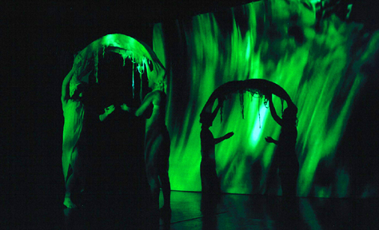

My Great Tree! NYC
New York, NY USA
Artist Project
Anemone Dance Theatre

Dance Space Center - New York, NY, May 3, 2003
In this time filled with fear, violence and
uncertainty, remember? offers an opposite reflection,
that of pure beauty. A projected set of undulating
grasses, hypnotic sound score, and a pair of figures
inhabit time and space. Light, vitality, radiance,
and creative freedom reign in the world of remember?.
Created by ANEMONE DANCE THEATER, directed by Sara
Baird in collaboration with Erin Dudley(dance) Lee
Whittier(video), and Christopher Tignor(music).
-Sara Baird
Remembering Beauty New York Arts Magazine, Review Article, June 2003
 Return to My Great Tree! NYC
Return to My Great Tree! NYC
Comments
Please send e-mail to: June Julian jj68@nyu.edu
All contents copyright
© 1996 - 2003 June Julian
All rights reserved
My Great Trees! NYCis supported by a grant from the Puffin Foundation